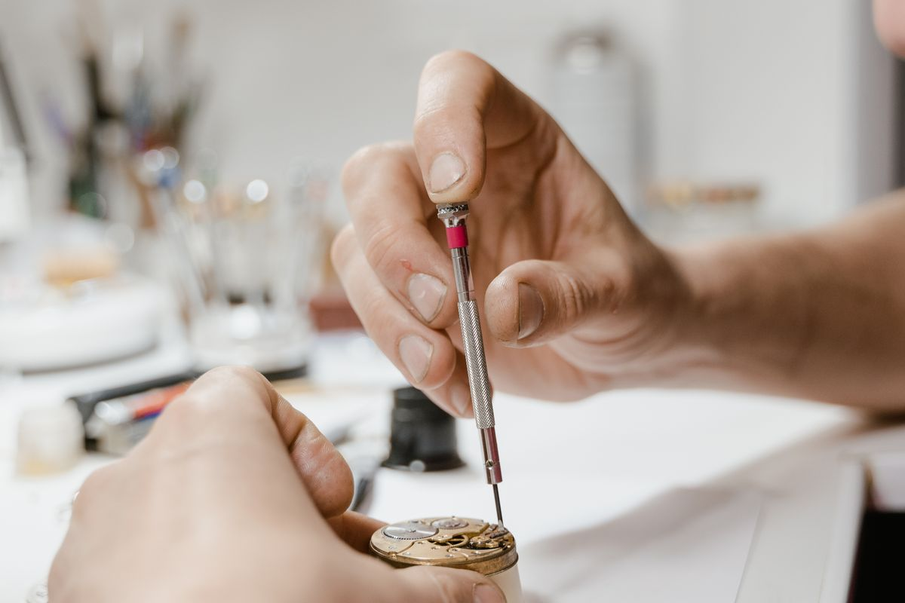

Case 241 — The chronograph that would not reset
1969 manual-wind chronograph, Valjoux 7733. Stopped two years ago; the chronograph hand had not returned to zero for a decade before that.
The brief
The owner bought the watch new and wore it daily into the 1990s. It arrived not running, crown stiff, chronograph starting but refusing to reset — the centre seconds hand stopped a few degrees short of twelve every time. He asked for “a service, and the chronograph working like it did.”
Decisions
Stripped and inspected, the movement was dirty but honest. Two faults explained everything: the centre wheel pivot was worn oval, starving the train of power, and the chronograph runner was bent — almost certainly an old, heavy-handed reset. Both parts are long discontinued; both were found as new-old-stock and agreed with the owner before fitting. The hands carry their original tritium lume, yellowed but intact. The owner asked whether they should be relumed “to look new”; my advice was no, and he took it — reluming is irreversible, and the lume is part of the watch’s record.
Outcome
Full service with the two parts replaced. The chronograph starts, stops and resets to zero cleanly, and the watch holds a steady rate across positions. Five weeks on the bench, most of it waiting for the parts to arrive.
| Measure | As received | As returned |
|---|---|---|
| Rate (5 positions, mean) | not running | +4 s/d |
| Amplitude | — | 276° |
| Beat error | — | 0.2 ms |
| Chronograph reset | stops ≈4° short | dead on zero |

- Watch
- Chronograph, 1969, steel case
- Movement
- Valjoux 7733, manual-wind, 17 jewel
- Work
- Full service; centre wheel and chrono runner replaced (new-old-stock)
- Bench time
- 5 weeks, including parts wait
- Charged
- £480 service + £95 parts, as estimated
- Status
- Returned, November